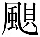
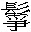
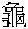
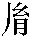

馬驥， 「驥」：青本作「駿」。字龍媒，賈人子，美丰姿；少倜儻，喜歌舞，〔馮評〕此篇兩截做法。○提筆伏下。輒從梨園子弟，以錦帕纏頭，美如好女，因復有「俊人」之號。〔但評〕起數語籠罩全篇。十四歲入郡庠，即知名。父衰老，罷賈而居， 「居」：鑄本、異史本、二十四卷本作「歸」。謂生曰：「數卷書，飢不可煮，寒不可衣。吾兒可仍繼父賈。」馬由是稍稍權子母。 權子母：〔吕註〕國語：「量資幣，權輕重，以振救民。民患輕，則爲作重幣以行之，於是乎有母權子而行，民皆得焉。若不堪重，則多作輕而行之，亦不廢重，於是乎有子權母而行。小大利之。」△按：文義爲以本求利，經商。〔但評〕世情難知，遭逢莫必，守貞抱義，存乎其人。從人浮海，爲颶風 颶風：〔何註〕颶音懼，四面之風也。韓愈文：「颶風鰐魚。」〔吕註〕正韻颶音貝。南越志：「颶風者，具四方之風也。」投荒雜録：「嶺南郡皆有颶風，以四面俱至也。」○按：韻箋引楊慎説：「颶作 
然奇醜者望望即去， 「覺馬」：二十四卷本作「馬」。「望望」：黄本、二十四卷本作「望之」。終不敢前。〔何評〕可知。其來者，口鼻位置，尚皆與中國同。共羅漿酒奉馬， 「皆」：青本作「能」。「奉馬」：青本作「奉焉」。馬問其相駭之故，答曰：「嘗聞祖父言：西去二萬六千里，有中國，其人民形象率詭異。 詭異：〔何註〕奇異也。但耳食 耳食：〔何註〕言耳食不能知其味也。〔吕註〕史記·六國表：「學者牽於所聞，不察其終始，因舉而笑之，此與以耳食無異。」又增一阿含經：「眼以色爲食，耳以聲爲食。」 二十四卷本「二萬」作「三萬」，「詭」作「怪」。「耳」：異史本作「且」。之，今始信。」問其何貧，曰：「我國所重，不在文章，而在形貌。〔但評〕奇想奇談。〔手稿本某甲評〕豈特羅刹國哉！言之慨然。〔何評〕即形貌尚顛倒，何况其他。其美之極者爲上卿，次任民社，下焉者，亦邀貴人寵， 二十四卷本無「焉」字。故得鼎烹以養妻子。〔但評〕不重文而重貌，抱屈者已不知凡幾；乃並所重者而復倒置焉，何怪不肖者之巧飾以求幸進乎？若我輩，初生時，父母皆以爲不祥，往往置棄之； 黄本「輩」下有「者」字。「置棄」：圖本、黄本作「棄置」。其不忍遽棄者，皆爲宗嗣耳。」問：「此名何國？」 「此名何國」：黄本作「此國何名」。曰：「大羅刹國。 大羅刹國：〔吕註〕文獻通考：「羅刹國，其人極陋，朱髮黑面，獸牙鷹爪，與林邑人作市以夜，晝則掩其面。隋大業三年，遣使常駿等使赤土國，至羅刹。」
都城在北去三十里。」馬請導往一觀，於是雞鳴而興，引與俱去。天明始達都。都以黑石爲牆，色如墨；樓閣近百尺，然少瓦，覆以紅石； 二十四卷本「覆」上有「皆」字。拾其殘塊磨甲上，無異丹砂。 青本「無」下有「以」字。時值朝退，朝中有冠蓋出，村人指曰：「此相國也。」視之：雙耳皆背生，鼻三孔，睫毛覆目如簾。又數騎出，曰：「此大夫也。」以次各指其官職， 「官」：鑄本作「冠」。率

鬡 鬡：〔何註〕髮亂貌。怪異；然位漸卑，醜亦漸殺。 殺：〔何註〕殺，所界切，音鎩，减也。〔但評〕耳不聰，目不明，黑牆囿其識，墨樓冥其心，日坐於中，聽夜叉歌，視夜叉舞，與鬡怪異之卿大夫贊襄國是，此其所以爲羅刹也歟？〔手稿本某甲評〕簡而勁。無何，馬歸，街衢人望見之，譟奔跌蹶，如逢怪物；村人百口解説，市人始敢遥立。既歸，國中無大小，咸知村有異人。 「無大小，咸知村有異人」：鑄本作「咸知有異人」。於是搢紳大夫，争欲一廣見聞， 「一」：青本、黄本作「以」。遂令村人要馬。然每至一家， 鑄本無「然」字。閽人輒闔户，丈夫女子竊竊自門隟 隟：〔何註〕同 。中窺語，〔但評〕宰相、大夫襯東陽三世子；國王襯龍君；嫌後出龍女太突，亦先於此安頓「女子窺語」一句，文心何等細密。終一日，無敢延見者。〔馮評〕昌黎之文當時且有怪之者，亦羅刹國之見也。村人曰：「此間一執戟郎， 執戟郎：〔吕註〕東方朔客難：「位不過侍郎，官不過執戟。」註：執戟，侍郎之職。 黄本、青本無「郎」字。曾爲先王出使異國，所閲人多，或不以子爲懼。」造郎門，郎果喜，揖爲上賓。視其貌 「賓」：鑄本作「客」。「其」：二十四卷本作「郎」。：如八九十歲人，目睛突出，鬚卷如猬。曰：「僕少奉王命， 二十四卷本「少」下有「年」字。出使最多；獨未嘗至中華。
。中窺語，〔但評〕宰相、大夫襯東陽三世子；國王襯龍君；嫌後出龍女太突，亦先於此安頓「女子窺語」一句，文心何等細密。終一日，無敢延見者。〔馮評〕昌黎之文當時且有怪之者，亦羅刹國之見也。村人曰：「此間一執戟郎， 執戟郎：〔吕註〕東方朔客難：「位不過侍郎，官不過執戟。」註：執戟，侍郎之職。 黄本、青本無「郎」字。曾爲先王出使異國，所閲人多，或不以子爲懼。」造郎門，郎果喜，揖爲上賓。視其貌 「賓」：鑄本作「客」。「其」：二十四卷本作「郎」。：如八九十歲人，目睛突出，鬚卷如猬。曰：「僕少奉王命， 二十四卷本「少」下有「年」字。出使最多；獨未嘗至中華。
今一百二十餘歲，又得睹上國人物， 鑄本無「嘗」字，「睹」作「見」。二十四卷本「二」作「三」，「睹」作「見」。此不可不上聞於天子。〔馮評〕又漸漸引出一層。然臣卧林下， 「臣」：青本、黄本作「伏」。十餘年不踐朝階，早旦爲君一行。」乃具飲饌，修主客禮。 青本、黄本「君」下有「勉」字。二十四卷本「主客」作「客主」。酒數行，出女樂十餘人，更番歌舞，貌類如夜叉， 鑄本、異史本、二十四卷本無「如」字。皆以白錦纏頭，拖朱衣及地。扮唱不知何詞，腔拍恢詭。 腔拍恢詭：〔何註〕腔拍，聲音節奏也。恢詭，非常奇異也。莊子·齊物論：「恢詭譎怪，道通於一。」主人顧而樂之，問：「中國亦有此樂乎？」曰：「有。」主人請擬其聲，遂擊桌爲度一曲。 二十四卷本「遂」上有「馬」字。主人喜曰：「異哉！聲如鳳鳴龍嘯，得未曾聞。」 「得」：鑄本作「從」。「聞」：二十四卷本作「有」。〔馮評〕目之於色，不同視也，何以耳之於聲有同聽焉？翼日趨朝，薦諸國王。〔但評〕樂由人心生也。其人奇醜，其腔拍恢詭，可知白錦纏頭，朱衣曳地，亦有此樂云者，料中國未必有此也。聞所聞而薦諸朝，執戟郎應是此邦巨擘。
王忻然下詔。有二三大臣言其怪狀，恐驚聖體，王乃止。郎出告馬， 「臣」：鑄本作「夫」。「怪狀」：二十四卷本、黄本作「狀怪」。「郎」：青本、異史本作「即」。深爲扼腕。居久之，與主人飲而醉，把劍起舞，以煤塗面作張飛。 張飛：〔吕註〕三國志·蜀志：張飛字益德，涿郡人也。少與關羽俱事先主。先主爲漢中王，拜飛爲右將軍，後爲帳下將范彊、張達所害。追諡曰桓侯。主人以爲美，曰：「請客以張飛見宰相。宰相必樂用之， 鑄本「客」作「君」，無「宰相必樂用之」。〔但評〕大臣不喜真面目，滿朝中皆花面登場矣。噫！厚禄不難致。」馬曰：「嘻！遊戲猶可，何能易面目圖榮顯！」〔手稿本某甲評〕今之易面目圖榮顯者，初亦猶作此想否？〔馮評〕秦谷鷄鳴，韓莊犬吠，中國帶面具傅脂粉求富貴利達者，何所不有，豈尚知有本來面目哉？此人何迂也！〔何評〕駡世。主人固强之， 鑄本無「嘻」字，「强」上無「固」字。黄本「何」作「安」，並青本「易」作「以」。馬乃諾。主人設筵，邀當路者飲，令馬繪面以待。未幾客至，呼馬出見客。客訝曰：「異哉！何前媸而今妍也！」遂與共飲， 鑄本無「飲」、「未幾」三字。二十四卷本「繪」作「畫」，「見客」作「見」。「飲」：黄本作「宴」。甚歡。
馬婆娑歌「弋陽曲」， 弋陽曲：〔吕註〕按：弋陽，調名，外江曲子。一座無不傾倒。明日，交章薦馬。王喜，召以旌節，既見，問中國治安之道，馬委曲上陳，大蒙嘉嘆，賜宴離宫。酒酣，王曰：「聞卿善雅樂，可使寡人得而聞之乎？」 青本「賜」作「馬」，二十四卷本「聞之」作「聞」。馬即起舞，亦效白錦纏頭，作靡靡之音。王大悦，即日拜下大夫，時與私宴，恩寵殊異。久而官僚百執事，頗覺其面目之假；所至，輒見人耳語，不甚與款洽。馬至是孤立，〔但評〕要露本來面目，自必孤立無徒。憪 憪：〔何註〕音僩，不自安也。然不自安，〔但評〕以面目圖榮顯，到底人覺其假，徒自取辱。此語爲不得志之人痛下針砭。遂上疏乞休致，不許；又告休沐， 休沐：〔吕註〕唐會要：「凡百官，十日一休沐。」〔何註〕言一值休沐之時，輒不着冠裳，縱意所如也。乃給三月假。於是乘傳 乘傳：〔吕註〕説文：「驛遞口傳。」按驛傳車馬，所以供急遽之令，若今之遞馬也。載金寶，復歸山村。 鑄本無「百執事頗覺」五字，「其」上有「知」字。黄本無「復」字，鑄本無「山」字。〔但評〕吾亦欲東耳，安能鬱鬱久居此哉！村人膝行以迎。馬以金貲分給舊所與交好者，歡聲雷動，村人曰：「吾儕小人 吾儕小人：〔何註〕儕音柴，輩也。左傳·宣十一年：「吾儕小人。」受大夫賜，明日赴海市，〔但評〕渡下無痕。〔馮評〕以上羅刹，以下海市，此作過渡之交。當求珍玩，用報大夫。」問：「海市何地？」曰：「海中市， 「用報大夫」：二十四卷本作「用報大德」，鑄本作「以報」。「海中」：黄本作「海」。四海鮫人， 鮫人：〔吕註〕述異記：「南海中有鮫人室，水居如魚，不廢機織，其眼能泣，泣則出珠。」集貨珠寶；四方十二國均來貿易。中多神人遊戲。〔但評〕神人遊戲，自是好世界。一語束上渡下。
雲霞障天，波濤間作。貴人自重，不敢犯險阻，皆以金帛付我輩， 「帛」：二十四卷本作「寶」。代購異珍。今其期不遠矣。」問所自知，曰：「每見海上朱鳥來往，七日即市。」馬問行期，欲同遊矚，村人勸使自貴， 「來往」：鑄本作「往來」。黄本「行期」作「何期」，並青本「貴」作「重」。馬曰：「我顧滄海客，何畏風濤！」〔但評〕倘畏風濤，必終埋没。未幾，果有踵門寄貲者，遂與裝貲入船。船容數十人， 二十四卷本「寄貲」作「寄貨」，並鑄本「容」作「客」。平底高欄。十人摇櫓，激水如箭。凡三日，遥見水雲幌漾之中，樓閣層疊；貿遷之舟，紛集如蟻。少時抵城下，視牆上磚，皆長與人等，敵樓 敵樓：〔何註〕城上守御之樓，即唐書·馬燧傳所謂譙櫓，俗云譙樓也。高接雲漢。維舟而入，見市上所陳，奇珍異寶，光明射眼， 「眼」：鑄本、異史本、二十四卷本作「目」。多人世所無。一少年乘駿馬來，市人盡奔避，云是「東洋三世子」。 「東洋」：黄本作「東海」，青本作「東陽」。世子過，目生曰：「此非異域人？」即有前馬者來詰鄉籍，生揖道左，具展邦族，世子喜曰：「既蒙辱臨，緣分不淺。」於是授生騎，請與連轡，乃出西城。 「西城」：黄本作「南城」。方至島岸，所騎嘶躍入水。生大駭失聲，則見海水中分，屹如壁立。俄睹宫殿，玳瑁 玳瑁：〔何註〕音代妹。本草：「或作瑇瑁。似 
下馬揖入，仰見龍君在上，世子啟奏：「臣遊市廛，得中華賢士，引見大王。」生前拜舞，龍君乃言：「先生文學士，必能衙官屈、宋。 衙官屈宋：〔吕註〕續世説：「杜審言，杜甫之祖也。恃才蹇傲。蘇味道爲天官侍郎，審言預選試。判訖，謂人曰：『蘇味道必死。』人問其故。曰：『見吾判自當羞死。吾之文章，合得屈宋作衙官；吾之書跡，合得王義之北面。』其矜誕如此。」欲煩椽筆 椽筆：〔吕註〕世説：「王珣夢人以大筆如椽與之。既覺，語人曰：『此當有大手筆事。』俄而帝崩，哀册諡議，皆珣所草。」△按：事見晉書·王珣傳。賦『海市』，幸無吝珠玉。」生稽首受命。授以水精之硯，龍鬣之毫；紙光似雪，墨氣如蘭。生立成千餘言，〔馮評〕比木元虚之賦，蘇端明之詩何如？獻殿上，龍君擊節曰：「先生雄才，有光水國多矣！」 鑄本無「多」字。遂集諸龍族，讌集采霞宫。
酒炙數行，龍君執爵而向客曰 鑄本無「而」字。：「寡人所憐女，未有良匹，願累先生。先生倘有意乎？」生離席愧荷，唯唯而已。龍君顧左右語。無何，宫人數輩， 「人數輩」：鑄本作「女數人」。扶女郎出。珮環聲動，鼓吹暴作，拜竟睨之，實仙人也。女拜已而去。少時，酒罷，雙鬟挑畫燈， 「鼓吹」：二十四卷本作「鼓樂」。黄本無「畫」字。「燈」：青本作「燭」。導生入副宫。女濃妝坐伺。珊瑚之牀，飾以八寶；帳外流蘇， 流蘇：〔何註〕雜五采爲同心，下垂若流，盤綫綉繪，今帳鉤有鬚之綫結也。〔吕註〕續漢書：「駙馬赤珥流蘇。」摯虞决疑要註：「凡下垂爲蘇。」綴明珠如斗大；〔馮評〕服物之盛。
衾褥皆香軟。天方曙，則雛女妖鬟，奔入滿側。〔馮評〕婢僕之盛。生起，趨出朝謝， 鑄本「雛」上無「則」字。「出」：青本作「去」。拜爲駙馬都尉， 駙馬都尉：〔吕註〕見王成「儀賓」註。〔何註〕漢武置駙馬都尉。駙，副也，謂掌副車之馬也。魏、晉尚公主，並稱駙馬。趙葵行營雜録：「皇女爲公主，其夫必拜駙馬都蔚，故謂之駙馬。宗室女封郡主者謂夫爲郡馬，封縣主者爲縣馬，皆起於此。」以其賦馳傳諸海。諸海龍君，皆專員來賀，争折簡招駙馬飲。生衣綉裳，駕青虬， 青虬：〔吕註〕楚辭：「駕青虬兮驂白螭。」註：「虬，龍子有角者。」〔何註〕虬音觩。呵殿而出。〔但評〕大丈夫不當如是耶？武士數十騎，皆雕弧， 弧：〔何註〕弧音狐，木弓也。荷白棓， 棓：〔何註〕棓音皮，同棒，杖也。△按：棓音蚌。晃 晃：〔何註〕同晄，音幌，明也，光耀也。吴都賦：「炫晃芬馥。」耀填擁。 鑄本「駕」作「坐」，無「呵」，並二十四卷本「皆」作「背」。「晃」：黄本作「光」。〔馮評〕出入儀衛之盛。
馬上彈筝，車中奏玉，三日間，遍歷諸海。由是「龍媒」 龍媒：〔何註〕駿馬也。漢書·禮樂志：「天馬徠兮龍之媒。」言駿馬爲龍之媒合也。之名，譟於四海。〔但評〕平底高欄，櫓激如箭，視颶風引去何若？水雲晃漾中，樓閣高接霄漢，視黑石牆中樓閣何若？世子目之，謂非異域人，授騎連轡，從與俱歸，視以爲妖而噪奔者何若？啟奏引見，視大臣阻詔何若？玉堂給札，文學進身，硯滌水精，毫揮龍鬣，倚馬萬言，觀者擊節，視黑煤塗面白錦纏頭時又何若？東牀坦腹，得配仙人，雛女妖鬟，奔入滿側，視門中女子何若？人争識面，世盡知名，馬上彈筝，車中奏玉，視百僚耳語，不與款洽時又何若？前則所如不合，耳目皆非；此則知己相逢，精采焕發。人在光天化日，事皆悦目快心，大丈夫得志於時，鮮不謂風波險阻，皆彼蒼之所以玉成我者。然而颶風引去，何處非羅刹之鄉？雲霞障天，奚由覓蜃樓之路？觀於朱鳥導來，青鳥唤去，可知我生遇合，天實爲之。不惟花面逢迎，徒取羞而無益；即文章有價，海宇知名，富貴既難認真，妻孥亦難相守。所可得以自信者，惟此忠孝之心已耳。
宫中有玉樹一株，圍可合抱；本瑩澈， 「本」：二十四卷本作「木」。如白琉璃；中有心，淡黄色；稍細於臂， 異史本、黄本「如白」作「如」。「稍」：青本、黄本作「梢」。葉類碧玉，厚一錢許，細碎有濃陰。常與女嘯咏其下。花開滿樹，狀類薝蔔， 薝蔔：〔吕註〕羣芳譜：「栀子，即西域薝蔔花。」 「咏」：黄本作「吟」。「薝蔔」：各本均作「簷葡」，今據羣芳譜改。每一瓣落，鏘然作響。拾視之，如赤瑙雕鏤，光明可愛。〔馮評〕異樹。時有異鳥來鳴：毛金碧色，尾長於身，聲等哀玉，惻人肺腑。〔馮評〕異鳥。生每聞輒念鄉土， 「每聞輒念鄉土」：鑄本作「聞之，輒念故土」。〔馮評〕一句帶起下文。因謂女曰：「亡出三年，恩慈間阻，每一念及，涕膺汗背。卿能從我歸乎？」女曰：「仙塵路隔，不能相依。妾亦不忍以魚水之愛，奪膝下之歡。容徐謀之。」
生聞之，泣不自禁， 「泣」：鑄本作「涕」。女亦嘆曰：「此勢之不能兩全者也！」明日，生自外歸，龍君曰：「聞都尉有故土之思，詰旦趣裝，可乎？」 「君」：鑄本作「王」。「趣」：黄本作「取」。生謝曰：「逆旅孤臣，過蒙優寵，銜報之誠，結於肺肝。容暫歸省，當圖復聚耳。」入暮，女置酒話别。生訂後會，女曰：「情緣盡矣。」生大悲，女曰：「歸養雙親， 「肝」：諸參校本作「腑」。青本「女置」作「乃置」，「養雙」作「我父」。見君之孝。人生聚散，百年猶旦暮耳，何用作兒女哀泣！此後妾爲君貞，君爲妾義，兩地同心，即伉儷也，何必旦夕相守，乃謂之偕老乎？〔但評〕百年猶旦暮，此見道語也。聚散何常，作兒女哀泣者癡矣。同心即伉儷，貞義之間，豈可以形跡諭哉？若渝 渝：〔何註〕音俞，變汙也。此盟，婚姻不吉。〔但評〕人當大得意時，當知榮枯有數，聚散何常，惟有忠君孝親，安貞守義，是自己實在事業，此外皆無足重輕也。此爲大得志之人指其歸宿。倘慮中饋 中饋：〔何註〕饋音匱。儀禮註：「以物與神及人皆曰饋。」周禮註：「進食於尊曰饋。」中饋，婦人職也。易·家人：「六二在中饋，吉。」註：「女子正乎内也。」乏人，納婢可耳。更有一事相囑：自奉裳衣，似有佳朕， 朕：〔何註〕兆也。〔吕註〕正韻：「朕宜作眹。真忍切，陳上聲。」佩觿集：「吉凶形兆謂之兆眹。」○按：亦作朕。見莊子·應帝王註。煩君命名。」生曰：「其女耶， 「裳衣」：鑄本、異史本、二十四卷本作「衣裳」。「朕」：二十四卷本作「娠」。鑄本無「其」字。青本、黄本「耶」上有「也」字。可名龍宫；男耶，可名福海。」〔但評〕龍宫福海，何處可求？海市蜃樓，隨時皆是。女乞一物爲信。
生在羅刹國所得赤玉蓮花一對， 「一對」：鑄本、異史本、二十四卷本作「一雙」。出以授女，〔馮評〕帶筆。女曰：「三年後四月八日，君當泛舟南島，還君體胤。」女以魚革爲囊，實以珠寶 「胤」：青本作「嗣」，黄本作「 
見兩兒坐浮水面， 「浮」：鑄本作「在」。拍流嬉笑，不動亦不沉。近引之，兒啞然捉生臂，躍入懷中。其一大啼，似嗔生之不援己者。亦引上之。細審之，一男一女，貌皆婉秀。 「審」：黄本作「視」。「婉」：鑄本作「俊」。額上花冠綴玉，則赤蓮在焉。背有錦囊，拆視，得書云：「翁姑計各無恙。 「計各」：鑄本作「俱」。忽忽三年，紅塵 紅塵：〔吕註〕班固西都賦：「紅塵四合，煙雲相連。」李陵詩：「紅塵塞天地，白日何冥冥。」永隔；盈盈一水， 盈盈一水：〔吕註〕古詩：「迢迢牽牛星，皎皎河漢女，盈盈一水間，脈脈不得語。」青鳥難通。 青鳥難通：〔吕註〕漢武内傳：「上于承華殿殿前，見一青鳥從西方來，問東方朔。朔曰：『此西王母欲來也。』頃之，王母果至。」○伏知道爲王寬與婦書：「錦水丹鱗，素書稀達，玉山青鳥，仙使難通。」△按：上述漢武帝事見漢武故事。結想爲夢，引領成勞，茫茫藍蔚， 藍蔚：〔何註〕蔚藍，天也。杜甫詩：「上有蔚藍天。」〔吕註〕按陸游老學庵筆記：「蔚藍二字，乃隱語天也，非可以義理解也。」杜詩「上有蔚藍天」，猶未有害。韓子倉云：「水色天光共蔚藍」，是謂水天之色皆如藍，恐又因老杜而失之者。至王漁洋先生秦淮雜詩云：「十里秦淮水蔚藍」，是直謂水之色矣。未識於義何如。此又作藍蔚，未詳所本。有恨如何也！ 黄本「有」作「自」，並青本「如何」作「何如」。〔但評〕茫茫藍蔚，衹是一「情」字，即衹是一「恨」字。
顧念奔月姮娥，且虚桂府； 桂府：〔吕註〕酉陽雜俎：「月中有桂，高五百丈。」○鄭嵎津陽門詩註：「葉法善引明皇入月宫，見一宫，榜曰『廣寒清虚之府』。」投梭織女， 投梭織女：〔吕註〕續齊諧記：「天河之東有織女，天帝之女也。勞於機杼。天帝憐其獨處，許嫁牽牛，遂廢織。天帝怒，責歸河東，使一年一度。」猶悵銀河。 銀河：〔吕註〕江總詩：「織女今夕渡銀河。」我何人斯，而能永好？興思及此， 「姮」：二十四卷本作「嫦」。「思」：二十四卷本作「念」。輒復破涕爲笑。 破涕爲笑：〔吕註〕劉琨答盧諶書：「詩復相與舉觴對膝，破涕爲笑。」别後兩月，竟得孿生， 孿生：〔何註〕孿，戀平聲。揚子方言：「東楚間凡人獸雙生謂之釐孖。」孖音兹，蕃長也。〔吕註〕集韻：孿音涮。説文：「一乳兩子也。」揚子：「東楚間凡人獸乳而雙生謂之釐孖，秦晉間謂之連子，自關以東皆謂之孿。」△按：孿，廣韻爲所眷切。今音欒。今已啁啾懷抱，頗解笑言； 「笑言」：鑄本作「言笑」。覓棗抓梨，不母可活。
敬以還君。所貽赤玉蓮花，飾冠作信。膝頭抱兒時，猶妾在左右也。聞君克踐舊盟，意願斯慰。 「斯」：黄本作「期」。妾此生不二，之死靡他。奩中珍物，不蓄蘭膏；鏡裏新妝，久辭粉黛。君似征人，妾作蕩婦， 蕩婦：〔吕註〕古詩：「昔爲倡家女，今作蕩子婦。」 「蕩」：二十四卷本作「嫠」。即置而不御，亦何得謂非琴瑟哉？〔馮評〕纏綿惻楚，亦復激昂。〔但評〕至理名言。○果是琴瑟，即不御亦依然琴瑟也。非琴非瑟，雖常御之，豈能静好乎？獨計翁姑亦既抱孫，曾未一覿新婦，揆之情理，亦屬缺然。歲後阿姑窀穸，當往臨穴，一盡婦職。過此以往， 「亦既」：鑄本作「已得」。「以往」：二十四卷本作「一往」。則『龍宫』無恙，不少把握之期；『福海』長生，或有往還之路。〔但評〕「龍宫無恙」數語，妙語雙關，深情無限。
伏惟珍重，不盡欲言。」生反復省書攬涕。兩兒抱頸曰：「歸休乎！」生益慟， 青本、黄本「益」上無「生」字。撫之曰：「兒知家在何許？」兒亟啼，嘔啞言歸。生望海水茫茫， 「亟」：鑄本無，青本、黄本作「泣」。「望」：鑄本作「視」。極天無際，霧鬟人渺，煙波路窮。抱兒返棹，悵然遂歸。生知母壽不永，周身物悉爲預具，墓中植松檟百餘。逾歲，媪果亡。靈轝 轝：〔何註〕輿同。至殯宫， 殯宫：〔何註〕潘岳賦：「歸反哭乎殯宫。」有女子縗絰臨穴。衆方驚顧， 鑄本無「方」字。忽而風激雷轟，繼以急雨，轉瞬間已失所在。 鑄本無「間」字。松柏新植多枯，至是皆活。福海稍長，輒思其母，忽自投入海，數日始還。龍宫以女子不得往，時掩户泣。一日，晝暝，龍女忽入， 「忽」：鑄本、異史本、二十四卷本作「急」。止之曰：「兒自成家，哭泣何爲？」乃賜八尺珊瑚一樹、龍腦香一帖、明珠百顆、 鑄本「樹」作「株」，「顆」作「粒」。八寶嵌金合一雙，爲作嫁資。 鑄本無「作」字。生聞之，突入，執手啜泣。俄頃，疾雷破屋，女已無矣。 「疾」：鑄本作「迅」。「無」：二十四卷本作「杳」。〔馮評〕局微散緩，昔予友讀之曰善。
異史氏曰：「花面逢迎，世情如鬼。嗜痂 嗜痂：〔吕註〕南史·劉穆之傳：「邕性嗜食瘡痂，以爲味似鰒魚。嘗詣孟靈休。靈休先患灸瘡，痂落在牀，邕取食之。靈休大驚，痂未落者，悉褫取飴邕。」之癖，舉世一轍。『小慚小好，大慚大好』； 小慚小好，大慚大好：〔吕註〕韓愈與馮宿論文書：「時時應事作俗下文字，下筆令人慚。及示人，則人以爲好。小慚者，亦蒙謂之小好；大慚，即必以爲大好矣。」若公然帶鬚眉以遊都市，其不駭而走者，蓋幾希矣。 鑄本無「者」、「蓋」二字。彼陵陽癡子將抱連城玉，向何處哭也？嗚呼！顯榮富貴，當於蜃樓海市 蜃樓海市：〔何註〕蜃音腎，大蛤也。禮·月令：「雉入大水爲蜃，吐氣成樓臺。張昌宗請託如市，李湛曰：『此海市蜃樓耳。』」中求之耳！」〔馮評〕末筆忽插入海市作議，似與上不接，古文中有之。
〔手稿本某乙評〕羅刹海市最爲第一，逼似唐人小説矣。
〔但評〕花面逢迎，以出身爲遊戲，固自好者所不屑；即遭逢極盛，得志於時，衹忠孝廉節，才是實地，餘皆海市蜃樓耳，不可謂無，不可謂有。何者可指爲真無？何者可指爲真有？知其無而有有之用，知其有而皆無之歸。以其本有，而有所當有；以其終無，而無所當無。乃可以有，可以無；可以無而有，可以有而無。是謂無有，是謂無無；是謂非無有，是謂非無無。
〔何評〕世人以美爲惡，以惡爲美，使無脂韋之骨，即强爲塗抹，終覺面目非真，遂令世界茫茫，幾無處安此一副面孔；正恐蜃樓海市，顯榮富貴，亦終不可得耳。悲夫！
〔方評〕古取人以行，降而以文，末矣；即間有兼貌者，其妍媸自判。至羅刹國，獨愈醜愈貴，則是非顛倒；推之行，亦愈醜愈尊，文亦愈醜愈顯。其寄慨可勝道哉？若馬生負才倜儻，假面便可邀榮；偶露本色，即羣疑衆謗，難容于朝，尤説盡宦海之險。及遊海市，賦成而龍君擊節矣，公主下嫁矣，名嘈四海而亨極一時矣。乃念嚴慈以歸省，下行又見許于水國。自是子女成行，龍女時修婦職。回思攫食山村，何前沉後揚如此哉！嗚呼！此聖人所以有浮海之思歟？
〔校記〕（底本：手稿本 參校本：異史本、青本、鑄本、黄本、二十四卷本）
本章完!